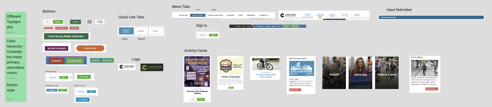

A full design system and component library built for Cascade Bicycle Club — a real nonprofit cycling advocacy organization — including personas, a complete visual language, and working prototypes for both desktop and mobile.
Cascade Bicycle Club is a real Seattle-based nonprofit focused on cycling advocacy, education, and community events across the Pacific Northwest. Our team was tasked with designing Radian — a complete design system and component library for Cascade's digital presence, built around four guiding principles: Intuitive, Unified, Universal, and Iterate. Those principles weren't just a slide — they showed up later as real tradeoffs, like choosing explicit text labels over icon-only shorthand specifically because "Universal" meant the system had to work for someone with zero cycling background, not just confident club veterans.
The need for a system wasn't abstract — it came directly out of an interface audit our team ran on Cascade's existing site. Below are the actual notes from that audit, three+ years old at this point but still the clearest evidence of the problem Radian was built to solve.

Two notes from that audit drove most of what came next: "Different Typography" — type treatments varied inconsistently across pages with no shared scale — and "Color hierarchy — currently too many primary, secondary colors." The screenshots make both visible: buttons alone ranged from a purple "BECOME A MEMBER" to an orange pill "DONATE NOW" to mismatched blue/green combinations, with no consistent shape, sizing, or hierarchy between primary and secondary actions on the same page.
We didn't formally state a hypothesis (an if/then prediction) or run a competitive teardown against other nonprofit or cycling-org sites as part of this project — the audit above was our primary research input, and it was specific enough to scope the work directly.
We didn't conduct direct interviews with Cascade's actual membership. Tom and June were built through team synthesis — combining the audit findings, the client brief, and our own research into what a nonprofit cycling org's user base typically looks like — rather than from primary interviews. That's a real limitation worth naming directly rather than implying otherwise.
We built two personas representing genuinely different relationships to cycling and to Cascade's platform — and the gap between them is what actually drove design decisions, not just a slide to check a UX-process box.
Tom didn't need the system explained to him — he needed it to be simple enough that he could explain it to someone else in thirty seconds at a group ride. June needed the opposite: enough built-in clarity that she never had to ask. That tension — design for the person teaching it, design for the person who's never seen it before — is why sign-in and account creation ended up as fully labeled, linear forms instead of icon-driven shorthand. A confident user like Tom barely notices the extra label text; for June, it's the difference between finishing the form and giving up halfway through.
The clearest "journey" we mapped wasn't a single user's step-by-step flow — it was the inconsistency a user would hit at every step of using Cascade's site. The audit screenshots above show this directly: a visitor exploring the menu tabs sees one visual language, lands on an activity card with a completely different card style and typography, then hits a "Become a Member" or "Donate" button rendered in a third, unrelated visual style depending on which page they're on. Nothing about the experience told them they were still on the same site, let alone using the same product.
We didn't build a formal step-by-step journey map for a specific persona's task (e.g. "June tries to find a beginner-friendly group ride") — the inconsistency itself, documented across the whole site, was the journey problem we scoped against.
Combining the audit and the persona work, the takeaway was that Cascade's site didn't have a design problem in any one place — it had a systems problem. Individual pages and components weren't badly designed in isolation; they just didn't belong to the same family. That reframing is what made a design system the right deliverable, rather than a redesign of any single page.
Success meant a single, documented system — colors, type, components, and patterns — that any page on Cascade's site could be built from, so a visitor moving from the homepage to an event page to a sign-up form would experience one consistent product instead of several loosely related ones. For Tom, that meant a system simple enough to explain to someone else in passing. For June, it meant enough built-in clarity that she'd never have to ask.
We didn't run a formal scoring framework (RICE or similar) against every possible component. Prioritization was informal but deliberate — the team discussed which pieces had to exist for the system to be usable at all (colors, type, buttons, forms) versus which could come later as the system matured (deeper pattern libraries, edge-case components). The audit findings made that an easy call: type and color hierarchy were the most visibly broken pieces of Cascade's existing site, so they came first.
We converged on one primary direction early — built around Cascade's existing brand green rather than introducing a new palette — and iterated within it rather than exploring several fully distinct system directions. Most of the iteration happened at the component level: how many button variants were actually necessary, how explicit form labels needed to be for a first-time user like June, and how the navigation should consolidate menu items that had drifted into inconsistent groupings on the live site.
We tested the system informally with teammates and peers rather than running structured sessions with real Cascade members or external users. That's a real limitation of this project — peer feedback caught usability issues at the component level, but it can't fully stand in for testing with people who don't already understand the system's intent.
Below is the full visual system and component library — color tokens, typography, button and form components, and the patterns that tie them together into real page layouts. Click through if you want the detail; the short version is below the carousel either way.
The system was built out into working prototypes for both desktop and mobile, confirming the component library held up responsively rather than just looking good as static documentation.
Across this 4-person team, my work spanned both sides of the project: persona research and the UX rationale behind it, plus hands-on work building out the visual system and components. The clearest fingerprint of that is the throughline from June's persona to the actual form design — that connection didn't happen by accident; it's the kind of thing that only holds together when the same person is thinking about the user problem and the pixel solution at the same time.
This was a class deliverable rather than a formal client engagement, but it had a real delivery moment beyond the classroom: our team presented Radian directly to a Cascade Bicycle Club stakeholder. That presentation was the actual test of whether the system held up outside an academic audience — explaining the rationale (the audit findings, the Tom/June tension, the resulting component decisions) to someone who'd have to live with the system if Cascade chose to adopt it.
We didn't define formal success metrics (North Star, leading/lagging indicators) as part of this project, since Radian was never deployed to Cascade's live site. If it had moved forward, the natural metrics would track design consistency over time — fewer one-off component variants shipped, faster page-build time using existing patterns, and direct stakeholder sign-off rate on new pages built from the system.
Radian is the most complete visual artifact in my portfolio, but revisiting it years later, the real gap is that I no longer have proof the system worked end-to-end — the prototypes that would show it are gone. If I did this over, I'd export static prototype screens or record a walkthrough the moment the project wrapped, instead of trusting a school-hosted Figma file to still exist three years on. What still holds up: the system wasn't just decoration. The audit gave us a real, specific problem — not a vague "make it look better" — and June's need for clarity is directly visible in how the forms were built. The Patterns section proves the components were designed to compose into real layouts, and presenting the finished system to an actual Cascade stakeholder was the moment that mattered most: it's one thing to defend design decisions to a professor, another to defend them to the organization that would actually have to live with the result.